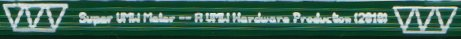

The Super VMW CPU Meter

Background
This is a project I've been occasionally working on since 1998.
I have had a simple 8-LED CPU meter for years.
Since my time as an undergrad I've been planning a fancier,
alphanumeric replacement. After a few abandoned attempts, I'll soon
have a finished version.
Hardware
I eventually plan to post the plans. It had six 14-segment
LTP3786E digits (red-orange), two 10-element bar graphs (green),
12 additional red LEDs, and 6 colorful LEDs (roygbv).
Current plans are to use 4 SAA1064 driver chips, driven by Linux
over an i2c bus (provided by a parallel port).
Software
Even if you don't have the parts to build a meter yourself, you can
download the software, which provides a text-mode emulation of the
hardware. That way you can watch the demos or even program
new ones.
Featured tools:
- CPU Meter -- bar graphs show odd/even CPU usage,
text display of total CPU percentage, random and cylon/knight-rider
usage speed on remaining LEDs
- Clock -- shows time, day of week, and 32-bit UNIX time (latter in
binary). Also occasionally shows day/month/year.
- Music Visualizer -- shows left/right VU bargraphs, as well
as text of what song is playing
- Scrolling Text -- list arbitrary text files to the display
Pictures
Here's the display portion of the PCB! This is my first-ever
PCB design, so sorry if it looks rough:


Here's some pictures of the finished prototype, running the "spin"
demo:


Here's an earlier picture of the hardware with only two digits
implemented:

Here's the emulator running the pulse demo that just toggles
the LEDs on and off:

Here's the emulator running the spin demo, which has a
recurring pattern spinning around the display:

Here's the display showing text. Currently it just prints static
strings, fancier display modes are planned:

Here's the clock demo. The border is showing time_t in 32-bit binary
(not Y2038 safe!) and the main display shows the time. Occasionally
the day / date / year is shown as well.

Older Attempts
Back to VMW productions page...